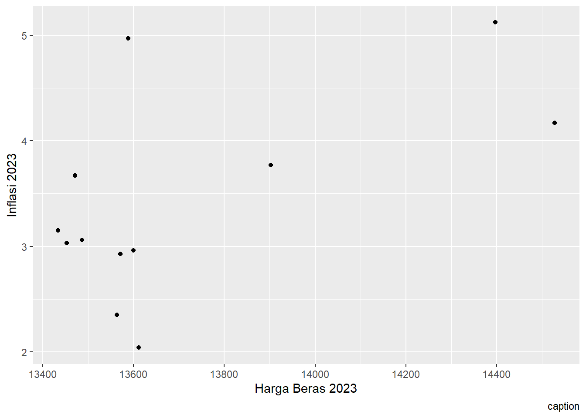

library(tidyverse)
library(readxl)
library(ggplot2)Pengaruh Pertumbuhan Inflasi Terhadap Harga Beras di Provinsi Banten Pada Tahun 2023
Metode Penelitian Politeknik APP Jakarta
1 Pendahuluan
1.1 Latar belakang
Latar belakang penelitian ini berawal dari pentingnya memahami berbagai faktor yang memengaruhi inflasi. Inflasi sendiri adalah kenaikan harga barang dan jasa secara umum dan terus-menerus dalam jangka waktu tertentu. Inflasi menjadi salah satu indikator utama untuk menilai kondisi ekonomi suatu wilayah, karena perubahan inflasi dapat memengaruhi daya beli masyarakat serta kestabilan ekonomi secara keseluruhan. Ketika inflasi meningkat, harga barang dan jasa menjadi lebih mahal, sehingga daya beli masyarakat menurun. Sebaliknya, ketika inflasi terkendali, kestabilan ekonomi dapat terjaga, yang memungkinkan masyarakat untuk memenuhi kebutuhan hidup mereka dengan lebih baik.
Dalam penelitian ini, harga beras dipilih sebagai fokus utama karena beras merupakan makanan pokok yang sangat penting bagi masyarakat Indonesia. Hampir semua orang di Indonesia mengonsumsi beras setiap hari, sehingga perubahan harga beras, baik itu kenaikan maupun penurunan, dapat berdampak langsung pada tingkat inflasi. Beras adalah salah satu komponen yang dihitung dalam Indeks Harga Konsumen (IHK), yang merupakan alat utama untuk mengukur inflasi. Oleh karena itu, fluktuasi harga beras tidak hanya memengaruhi pengeluaran rumah tangga, tetapi juga kondisi ekonomi secara nasional.
Melalui penelitian ini, diharapkan dapat dipahami lebih dalam bagaimana harga beras memengaruhi inflasi dan dampaknya terhadap masyarakat. Dengan memahami hubungan ini, pemerintah dan pembuat kebijakan dapat merancang strategi yang lebih efektif untuk menjaga kestabilan harga beras dan mengendalikan inflasi. Hal ini penting untuk melindungi daya beli masyarakat, khususnya kelompok ekonomi lemah, sekaligus menjaga stabilitas ekonomi secara keseluruhan. Pemahaman yang lebih baik mengenai hubungan harga beras dan inflasi juga dapat menjadi dasar bagi pengambilan kebijakan yang berpihak kepada kepentingan rakyat.
1.2 Ruang lingkup
Penelitian ini akan melihat bagaimana inflasi di Provinsi Banten pada tahun 2023 memengaruhi harga beras dan fokus untuk memahami apakah kenaikan inflasi berpengaruh langsung terhadap naik atau turunnya harga beras. Karena beras adalah makanan pokok yang penting bagi masyarakat, hasil penelitian ini diharapkan bisa membantu memberikan pemahaman yang lebih sederhana tentang hubungan antara inflasi dan harga beras dalam kehidupan sehari-hari.
1.3 Rumusan masalah
Berdasarkan latar belakang yang telah dipaparkan, rumusan masalah penelitian adalah sebagai berikut:
- Apakah ada Pengaruh dari Inflasi Provinsi Banten Pada Tahun 2023 Terhadap Harga Beras?
- Seberapa Besar Pengaruh Yang di timbulkan Terhadap Harga Beras?
1.4 Tujuan dan manfaat penelitian
Tujuan dari penelitian berjudul “Pengaruh Pertumbuhan Inflasi Terhadap Harga Beras di Provinsi Banten Pada Tahun 2023” adalah untuk memahami bagaimana inflasi di Provinsi Banten pada tahun 2023 memengaruhi harga beras. Penelitian ini juga bertujuan untuk memberikan gambaran yang lebih jelas tentang kondisi ekonomi dan perubahan harga beras di wilayah tersebut selama tahun tersebut. Manfaat dari penelitian ini adalah memberikan informasi yang bermanfaat bagi pemerintah, pelaku usaha, dan masyarakat umum, sehingga mereka bisa mengambil keputusan yang lebih baik terkait harga beras dan pengaruh inflasi di Provinsi Banten.
1.5 Package
Packages yang digunakan antara lain sebagai berikut:
2 Studi pustaka
1.Inflasi
inflasi merupakan suatu proses meningkatnya harga-harga secara umum dan terus-menerus berkaitan dengan mekanisme pasar yang dapat disebabkan oleh berbagai faktor, antara lain, konsumsi masyarakat yang meningkat, berlebihnya likuiditas di pasar yang memicu konsumsi atau bahkan spekulasi, sampai termasuk juga akibat adanya ketidaklancaran distribusi barang.
Terjadinya kelangkaan pasokan dan tingginya permintaan masyarakat terhadap pangan menimbulkan gejolak harga pangan. Sehingga peningkatan harga pangan berdampak terhadap inflasi (Irawati, Wibowo, & Ayu, 2019).
Kenaikan harga beras, sebagai salah satu kebutuhan pokok utama, memberikan kontribusi besar terhadap inflasi. Hal ini disebabkan oleh dominannya konsumsi beras dalam struktur pengeluaran masyarakat, terutama di negara berkembang seperti Indonesia (Suryani & Putra, 2021).
3 Metode penelitian
3.1 Data
| Bulan | Inflasi 2023 | Harga Beras |
|---|---|---|
| Januari | 4.97 | 13588 |
| Februari | 5.12 | 14397 |
| Maret | 4.17 | 14528 |
| April | 3.77 | 13902 |
| Mei | 3.67 | 13471 |
| Juni | 3.15 | 13433 |
| July | 2.93 | 13571 |
| Agustus | 2.96 | 13600 |
| September | 2.04 | 13611 |
| Oktober | 2.35 | 13563 |
| November | 3.03 | 13453 |
| Desember | 3.05 | 13486 |

Penelitian ini menggunakan data
library(readxl)
library(ggplot2)
dat<- read_excel("Data Metopel Inflasi dan Harga Beras 2023.xlsx")
ggplot(data = dat,
mapping = aes(x= `Harga Beras 2023`,
y= `Inflasi 2023`,
caption= "Sumber : Badan Pusat Statistik"))+
geom_point()
3.2 Metode analisis
Metode yang digunakan dalam penelitian ini adalah regresi univariat atau Ordinary Least Square (OLS) dengan satu variabel independen. Pendekatan ini dipilih karena bertujuan untuk menganalisis hubungan antara dua variabel, yaitu inflasi di Provinsi Banten sebagai variabel dependen dan harga beras sebagai variabel independen. Dengan menggunakan metode ini, penelitian berupaya untuk memahami sejauh mana perubahan harga beras dapat memengaruhi tingkat inflasi di wilayah tersebut. Spesifikasi yang dilakukan ialah sebagai berikut:
library(readxl)
dat<- read_excel("Data Metopel Inflasi dan Harga Beras 2023.xlsx")
head(dat)# A tibble: 6 × 3
Bulan `Inflasi 2023` `Harga Beras 2023`
<chr> <dbl> <dbl>
1 Januari 4.97 13588
2 Februari 5.12 14397
3 Maret 4.17 14528
4 April 3.77 13902
5 Mei 3.67 13471
6 Juni 3.15 134334 Pembahasan
4.1 Analisis masalah
Hasil regresinya adalah
library(readxl)
dat<-read_excel("DataMetopelRegresi.xlsx")
reg<-lm(Inflasi~HargaBeras,data=dat)
summary(reg)
Call:
lm(formula = Inflasi ~ HargaBeras, data = dat)
Residuals:
Min 1Q Median 3Q Max
-1.23549 -0.34582 -0.01739 0.25827 1.72915
Coefficients:
Estimate Std. Error t value Pr(>|t|)
(Intercept) -1.722e+01 9.003e+00 -1.913 0.0848 .
HargaBeras 1.506e-03 6.561e-04 2.295 0.0446 *
---
Signif. codes: 0 '***' 0.001 '**' 0.01 '*' 0.05 '.' 0.1 ' ' 1
Residual standard error: 0.8049 on 10 degrees of freedom
Multiple R-squared: 0.3451, Adjusted R-squared: 0.2796
F-statistic: 5.269 on 1 and 10 DF, p-value: 0.04465 Kesimpulan
Hasil analisis regresi menunjukkan bahwa inflasi pada tahun 2023 memiliki hubungan yang signifikan dengan harga beras. Berdasarkan penelitian, setiap kenaikan harga beras sebesar satu satuan berkontribusi terhadap peningkatan inflasi sebesar 0,001506 satuan. Hal ini mengindikasikan adanya pengaruh positif antara harga beras dan inflasi, di mana perubahan pada harga beras dapat memengaruhi tingkat inflasi secara langsung. Dengan kata lain, semakin tinggi harga beras, semakin besar kemungkinan inflasi meningkat. Namun, perlu diperhatikan bahwa model ini hanya mampu menjelaskan sekitar 34,51% variasi inflasi, sehingga masih ada faktor lain di luar harga beras yang juga memengaruhi inflasi.
Penelitian ini juga menggarisbawahi pentingnya memahami fluktuasi harga beras sebagai salah satu komoditas utama yang berdampak besar pada ekonomi masyarakat. Mengingat kontribusinya yang signifikan terhadap inflasi, kebijakan pengendalian harga beras menjadi sangat penting untuk menjaga stabilitas ekonomi.
Walaupun hubungan antara harga beras dan inflasi telah terbukti signifikan, faktor-faktor lain seperti distribusi, pasokan, dan kebijakan pemerintah juga harus diperhitungkan untuk mendapatkan gambaran yang lebih lengkap tentang dinamika inflasi. Kesimpulan ini memberikan wawasan penting bagi pelajar, masyarakat, dan pemerintah untuk lebih memahami bagaimana harga beras memengaruhi tingkat inflasi secara keseluruhan.
5.1 Saran
Untuk meningkatkan akurasi Dalam penelitian ini, disarankan untuk menambahkan data statistik atau tren historis terkait harga beras dan inflasi sebagai penguat argumen pada bagian pendahuluan. Hal ini dapat memberikan gambaran yang lebih jelas mengenai pentingnya hubungan antara harga beras dan inflasi dalam konteks ekonomi masyarakat, khususnya pada tahun 2023. Selain itu, metodologi penelitian perlu dijelaskan secara lebih rinci, termasuk alasan pemilihan variabel dan sumber data, sehingga analisis yang dilakukan menjadi lebih transparan dan dapat dipahami oleh pembaca.
Penelitian ini juga sebaiknya memasukkan faktor-faktor eksternal yang memengaruhi harga beras, seperti kondisi cuaca, kebijakan impor, atau distribusi. Diskusi tentang fluktuasi harga beras ini dapat membantu memberikan wawasan yang lebih luas mengenai bagaimana perubahan harga beras memengaruhi inflasi secara langsung maupun tidak langsung. Selanjutnya, dalam pengembangan penelitian ke depan, disarankan untuk menggunakan data yang lebih luas, baik lintas wilayah maupun lintas waktu, guna meningkatkan validitas hasil. Penggunaan metode regresi yang lebih kompleks, seperti model non-linear atau time-series, juga dapat dipertimbangkan untuk menangkap hubungan dinamis antara harga beras dan inflasi dengan lebih baik.
Dengan mengintegrasikan saran ini, penelitian diharapkan dapat memberikan kontribusi yang lebih signifikan dalam memahami hubungan antara harga beras dan inflasi serta memberikan masukan yang bermanfaat bagi pembuat kebijakan dan pihak-pihak terkait.